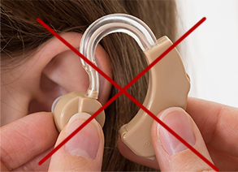

¡La época de los aparatos auditivos ha terminado! Ha llegado un producto revolucionario de un profesor español. Excelentes resultados hasta en 28 días.

¿El nuevo producto de restauración auditiva afectará al negocio de los aparatos auditivos? El gran otorrinolaringólogo Fernando Moras, predijo que esto sucedería. Él ha estado involucrado en el desarrollo de una terapia biomolecular con profesores españoles, ¡y encontraron una solución que te ayudará a escuchar mejor!
Como resultado de ensayos clínicos, más de 14,000 personas probaron este producto, mejoraron notablemente su audición en tan solo 2 meses y comenzaron a escuchar mejor. Incluso aquellos que tenían unos oídos casi sordos escucharon de nuevo. ¿Cómo fue posible?
El profesor Juan López, especialista biomolecular, decidió ayudar a las personas mayores que presentan una pérdida de audición diaria. Este fue el comienzo de una revolución en el campo de la otorrinolaringología. Después de 11 meses de investigación, él y sus compañeros crearon un producto natural, seguro, fácil de usar, que mejora significativamente la audición.
Las revistas médicas describen el producto como "un gran éxito en el campo de la otorrinolaringología", el médico fue nominado para el Premio Nobel. Gracias a su invento, las personas, incluso con discapacidades auditivas graves, pueden restaurar las células del nervio auditivo para que vuelvan a ser las mismas, sin necesidad de emplear aparatos auditivos.
“¡Los aparatos auditivos son una pérdida de dinero!” ¿Por qué la gente dice eso?
 Más de 14.000 personas que han optado por una restauración auditiva biomolecular han confirmado su eficacia. La gente ya no necesita aparatos auditivos. Decidimos centrarnos en el estudio de las desventajas y los retos que enfrentan las personas que utilizan estos aparatos. Y llegamos a la conclusión de que:
Los aparatos auditivos son caros.
El precio más bajo para un equipo es de 3757 GT, y este no es un único gasto. ¿Qué pasa con la carga de la batería? ¡El precio de las baterías o carga eléctrica en todo un año es casi de 690 GTQ!
Esto les provoca irritación y vergüenza a los usuarios al mismo tiempo.
Las personas con aparatos auditivos no lo soportan porque pueden ser consideradas como discapacitadas. Hace que se sientan incómodos con la pregunta: "¿Qué es ese aparato en tu oído?"
Sonidos extraños del dispositivo.
Las personas que usan aparatos auditivos suelen quejarse de la calidad del sonido que escuchan. A veces, se producen sonidos molestos, lo que agrega más estrés.
El aparato causa la inflamación del oído y agravan los problemas de audición.
Los aparatos provocan infecciones por hongos, que pueden dar lugar a infecciones en el oído. Esto hace que su audición se vea afectada.
Los aparatos auditivos solo funcionan cuando están en uso.
Cuando es necesario quitarse un aparato auditivo, por ejemplo: en la ducha o antes de acostarse, su audición sigue siendo mala. Es decir, el dispositivo no cura sus oídos, sino que permite escuchar mejor temporalmente.
Es por eso que la terapia biomolecular transforma todo el tratamiento para mejorar la audición. Los aparatos auditivos solamente amplifican los sonidos mientras se utilizan. Por otro lado, el tratamiento del profesor Juan López ayuda a restaurar las células nerviosas auditivas, y al mismo tiempo mejorar la audición natural, sin necesidad de aparatos auditivos. Sus componentes tienen excelentes propiedades regeneradoras, ayudan en todos los aspectos para la restauración auditiva. Es adecuado, incluso para personas con discapacidades auditivas graves. Cualquiera puede recuperar su audición y mejorarla hasta en un 100%. El producto se llama .
Está desarrollado con ingredientes naturales para restaurar la audición, es fácil de tomar y posee un alto nivel de confianza. Investigaciones posteriores realizadas por el Instituto de Investigación de Stuttgart en Alemania, demostraron que este producto es un 98% más efectivo que cualquier otro. Gracias a él, las personas de 38 a 93 años empezaron a resolver sus problemas de audición de diversa complejidad en tan solo 4 semanas.
¿Cómo funciona? Tan pronto como se empieza a tomar, el canal auditivo se "abre". La audición mejora en un 50%. Una amplia gama de sonidos se pueden escuchar a una mayor distancia. En los siguientes días de uso, las voces se vuelven más claras. Esto te permitirá escuchar conversaciones claras y a largas distancias. Reducirá el dolor y el zumbido en los oídos causado por la inflamación del canal auditivo.
Permite reducir el estancamiento del centro auditivo en el cerebro hasta en un 80% y aumentar el nivel auditivo hasta tres veces. Eso no es todo. Después de los primeros 28 días de consumir el producto, los pacientes del estudio, coincidieron en que su audición se había vuelto mucho más clara y ahora escuchan como cuando tenían 25 años.
Los resultados de estudios documentados lo respaldan:
Primera semana La audición a distancia mejora en un 50%
Segunda semana Las neuronas auditivas dañadas o muertas se recuperan. La audición y comprensión en conversaciones se vuelven más claras.
Tercera semana Los susurros y los sonidos bajos se escuchan 15 veces mejor, el tinnitus disminuye.
Cuarta semana Se reduce la carga en el centro auditivo del cerebro. La audición es más clara, casi igual que en las personas de 20 a 25 años.
Gabriel Hernández, de 51 años, de Ciudad de Guatemala, fue uno de los primeros pacientes en probar .

He tenido problemas de audición durante mucho tiempo. A los 40 años, pensaba que era normal. Cuando me hice mayor, ya no escuchaba como antes. Años después, no entendía de lo que hablaba la gente. Me avergonzaba todo el tiempo preguntar: "¿Qué? Repítelo. Lo siento, no pude oírte." Así que tuve que usar un aparato auditivo. Gasté mucho dinero en este aparato. ¡Es incómodo y muy molesto! No quería una operación. Me estremecí ante la idea de que los médicos me abrirían el cráneo. Tuve la suerte de conocer . Si no hubiera sido por este producto, me habría sentido mal por el resto de mi vida, porque era tan sordo que no podía oír casi nada. Lo utilicé solo 4 semanas. Ahora puedo escuchar incluso los susurros, ¡ya no necesito ese aparato auditivo! No tengo problema para ver la televisión, escuchar música, puedo oír a la gente, hablar en la calle, en la tienda o en el autobús. Me siento muy bien cuando puedo escuchar el sonido de los árboles y el canto de los pájaros en el jardín. Muchas gracias por este producto.
¿Por qué pagar por aparatos auditivos que no funcionan, cuándo existe un producto natural que es más barato y hace que la audición sea más clara?
- Ayuda en el funcionamiento del sistema nervioso. Controla la contracción y relajación de los músculos.
- Estimula el sistema inmunológico para que funcione normalmente.
- Ayuda en el funcionamiento del sistema nervioso. Ayuda a mantener la visión. y audición normal.
- Previene la enfermedad coronaria que es la fuente del mal funcionamiento del sistema nervioso.
- Inhibe el crecimiento de bacterias y hongos que causa una función anormal del oído externo.
- Tiene efecto antioxidante que puede inhibir el crecimiento de células cancerosas en el sistema nervioso.
La eficacia de está confirmada por el Centro de Investigación de Stuttgart. El profesor Juan López constantemente es nominado para premios, incluido el Premio Nobel. La buena noticia es que únicamente hoy se puede comprar con descuento. ¡Date prisa, el número es limitado!
El con un 50% de descuento solo se puede pedir en el siguiente enlace

Este producto no es un medicamento y no tiene ningún efecto terapéutico.
es un producto 100% natural y revolucionario con una acción combinada en forma de comprimidos que puede actuar 50 veces más rápido que una cápsula.